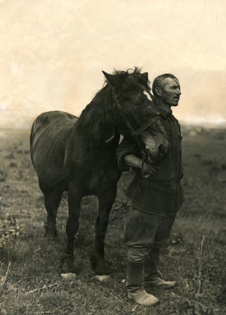

Деревня Лохино
Московская губернияЗвенигородский уездПавловская волость
Макаровы
Наше повествование начинается с рождения Гавриила, отца бабушки Жени. По данным метрических книг Архангельского прихода Гавриил Иванович родился 24 марта 1895 года в деревне Лохина. Родители его Иван Петрович (1863-1934) и Феодосия Косьминишна (1862-1929), крестьяне деревни Лохино. Крестили Гавриила 26 марта в церкви Святого Михаила Архангела. Гавриил стал четвертым по счету ребенком в семье. Первым ребенком в семье был Брат Василий 1888 г.р., далее родилась Анна (1890), в 1892 Наталия, после Гавриила шел Николай (1899), а самый младший, Семён, родился в 1902 году.
{kind=link}
На этой фотографии изображены мама Гавриила — Феодосия Косьминишна, Гавриил, младший брат Семён.

Согласно Статистической ведомости Лохинского общества от 1883 года земельный надел оформлен на Петра Макарова, отца Ивана Петровича, (№ 11 в списке). Семья состоит из 5 человек: 3 мужчин (Петр Макаров, сыновья Иван и Василий), 2 женщины (жена Петра Макарова, Наталья Григорьева и одна из 4 дочерей). Имеет 1 избу. В семье 2 грамотных мужчин. В хозяйстве одна лошадка и коровка. Остальные данные можно прочитать на отсканированном документе Статистической ведомости за 1883 год.
{kind=link}
Гаврила Иванович сапожничал в усадьбе Архангельское. В 1916 году был призван в Императорскую армию, попал на Юго-Западный фронт в 310-й Шацкой пехотный полк 78-й дивизии, участвовавший в сражении под Ковелем. В результате тяжелого ранения ружейным выстрелом в область верхней челюсти 23.07.16 на реке Стоход потерял глаз. 9 сентября 1916 года поступил в 35-й Московский госпиталь откуда после излечения вернулся в родную деревню. Тяжелое ранение постоянно беспокоило Гавриила Ивановича, вызывая постоянные приступы головной боли.

После революции работал паромщиком на переправе через реку Москва. в 1929 году вступил в колхоз «Пламя» где стал работать в конюшне. После слияния с мамоновским колхозом в начале 50-х перешел работать на Бадаевский Пивоваренный Завод в Филях.
Семья Макаровых состояла из
главы семейства Гаврилы Ивановича Макарова (24.III.1895-25.XII.1956),
его жены Прасковьи Ивановны (Мельниковой) (8.IX.1905-17.VII.1968),
старшего сына Виктора (1925-1935),
старшей дочки Жени (2.I.1928-21.X.2011),
средней Нади (30.IX.1929-5.I.2001) ,
младшей Вали (10.II.1937-9.VIII.2010)
и самой маленькой Раечки (1944-1948).


Гаврила Иванович Макаров (Ганя, как его называла Прасковья Ивановна) после революции вступил в колхоз, работал конюхом, мастерил обувь, растил детей. По воспоминаниям местных жителей был тщедушным и приветливым человеком, катал детей в салазках, по дороге в конюшню приветливо здоровался и никогда не отказывал в помощи. Мастерская его располагалась в доме, «кучи обрезков, производственная грязь, вокруг бегают «девки», так описывают обстановку, царившую в доме Гаврилы Ивановича. Неудивительно, что и бабушка Женя с теплотой и нежностью отзывалась о своем отце, нашем прадеде, он прожил чуть больше 60 лет, но память об этом смелом и добром человеке дошла до наших дней. Блохины, Курнаковы до сих пор с добротой вспоминают о дяде Гане, светлая память ему. Умер он 25 декабря 1956. Похоронен на Баковском кладбище. Труды его не прошли даром, сегодня мы живем в доме, который построил наш прадед. Жизнь его была непроста, но несмотря на все испытания, семья его смогла пережить войну, разрастись и дать свои корни. В знак уважения и памяти, мы надеемся установить новые подробности жизни Гаврилы Ивановича, а также пополнить информацию о родной деревне.
Прасковья Ивановна Мельникова (девочка справа)

Прасковья Ивановна Макарова (Мельникова) (Проша, как её называл Гаврила Иванович) родилась в деревне Думаново Марьинской волости Новоторжокского уезда Тверской Губернии, 8 сентября 1905 года в семье Ивана и Акулины Мельниковых. В раннем детстве потеряла мать, воспитывалась старшей сестрой и отцом Иваном. Знакомство с будущим мужем произошло в Москве. 19 июня 1924 Гавриил и Прасковья заключили свой союз. По воспоминаниям бабушки, мама часто оставляла их одних. Торговала молоком в Одинцово и Кунцево. Была необщительной и строгой женщиной. После смерти мужа Прасковья Ивановна жила вместе со своей старшей дочкой Женей в Москве. Умерла 17 июля 1968 года, похоронена на Баковском кладбище.
Родился в деревне Лохино в 1925 году. Первый ребенок в семье. Мы мало, что знаем о нем, но справедливо помнить и сохранять память об этом десятилетнем грустном на всех фотографиях мальчике. По воспоминаниям бабушки, Виктор постоянно озорничал и веселил сестренок. Запомнился один случай, когда в церки он показал козу сестренкам и батюшка отвесил подзатыльник ему. Виктор заболел воспалением легких, когда его и остальных детей везли на открытых грузовых машинах в пионерский лагерь. Вскоре Виктор умер, случилось это в 1935 близ города Волоколамск. Родители ездили хоронить его, место захоронения неизвестно.

Родилась в деревне Лохино 02 января 1928 года. Стала старшей сестрой после смерти брата Виктора. Совсем еще маленькой застала перенос деревни с Лохина Острова на Можайское шоссе, близ Одинцово. По ее рассказам удалось восстановить хронологию событий и начать написание истории деревни Лохино.

Родилась в деревне Лохино 30 сентября 1929 года. Средняя сестра. Имела 4 класса образования, работала на заводе «Знамя Труда». Муж участник ВОВ Селиванов Анатолий Иванович. Дети: Александр и Владимир. Умерла 5 января 2001 года, похоронена на Баковском кладбище.
Родилась в деревне Лохино 10 февраля 1937 года. Младшая сестра. После замужества получила фамилию Град. Дети: Андрей. Проживала на Преображенской площади. Умерла 9 августа 2010 года.

Родилась предположительно в 1944 году. Самая маленькая дочка. Умерла от менингита в 1948. Девочка не доедала и частенько забиралась к Блохиным на огород, поживиться ягодами. Бабушка Женя вспоминала, как маленькая встречала ее с работы и спрашивали не принесла ли она ей хлебушка. Девочка частенько выгонялась Прасковьей Ивановной в сени за какие-то проступки. Маленький организм не выдержал недоеданий и суровых будней послевоенного времени. Похоронена на Баковском кладбище.